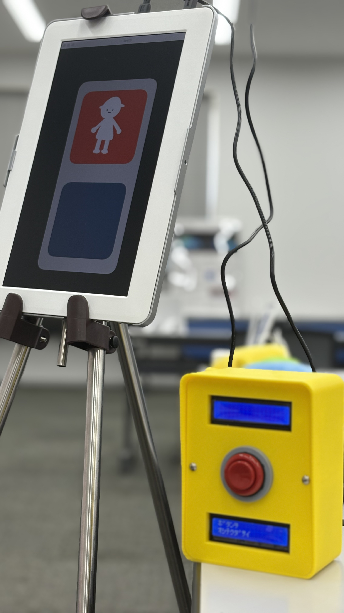
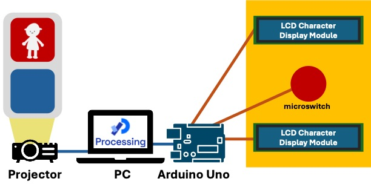

押しボタン信号機を押すことは，信号機の中の人の背中を押すこと．


Arduino Uno,マイクロスイッチ,LCDキャラクタディスプレイ,Processing
本作品は，押しボタン信号を通して，信号機の中の人である「ぴかる」とコミュニケーションをとる作品である．体験者は押しボタンを押すか押さないかで，
ぴかるの物語を分岐させることができる．押しボタン信号機を信号機の中の人とのコミュニケーションツールとして捉えさせる作品である．
体験は，ぴかるが体験者に対して，押しボタン信号機の文字表示を通して，話しかけるところから始まる．
ぴかるはアイドルになりたいという夢を持っており，背中を押してくれるか尋ねる．
体験者は，押しボタンを押すことで，ぴかるの背中を押すことができる．するとぴかるは勇気をもらい，一歩踏み出すことができ，青信号になる．
そしてダンスレッスンを始め，アイドルとして推してくれるかどうか尋ねてくるので，体験者は選択をし，物語は進んでいく．
夜中歩いていると，信号機があった．そのとき，信号機は赤であり，信号機の表示は立ち止まった人であった．ふとその時，その表示が，なにか迷いがあって，立ち止まってしまっている人に見えた． そして，押しボタン信号機には，「おしてください」の文字が．その文字が，私には，信号機の中の人からのメッセージのように感じた． 言われるがまま，ボタンを押すと，信号機は青になり，進む人の表示に切り替わった．その一連の流れが，私には，ボタンを押したことで， 信号機の中の人の背中を押し，一歩踏み出す勇気を与えたように感じた．そんな体験から制作した作品である．
押しボタン信号機の側は3Dプリンタで制作した．信号機の中に入っている，Arduino Unoにより，マイクロスイッチとLCDキャラクタディスプレイを制御している． 信号機の描画にはProcessingを用いている． Arduino UnoとProcessingはシリアル通信によって接続され，ボタンの入力や，シーンチェンジの情報をやり取りしている．